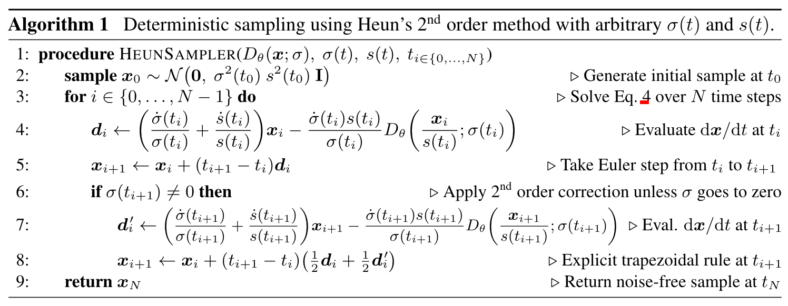
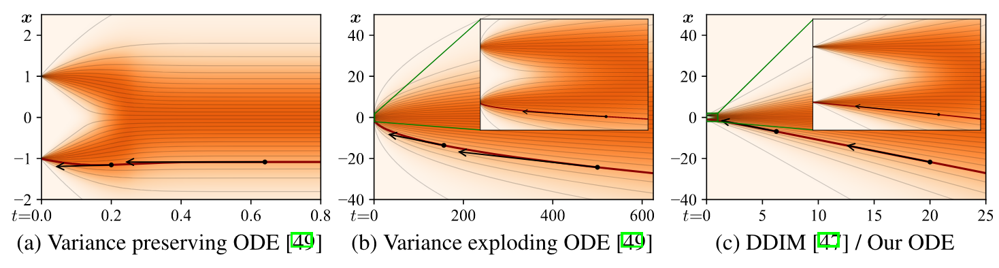
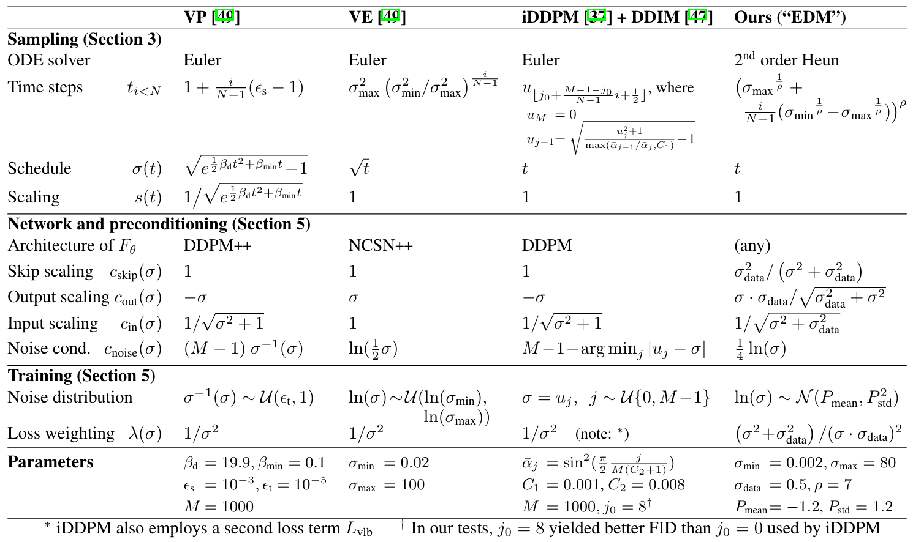

扩散模型统一框架
Introduction
扩散模型的火热吸引了众多研究者，相关工作百花齐放，但这样繁荣的景象也就带来了一个问题——每篇论文都有一套自己的体系，缺乏一个统一的框架；并且扩散模型的各个组件相互耦合，不便于单独研究。终于，NVIDIA 的研究者坐不住了，在论文[1]中详细阐述了扩散模型的设计空间。其实扩散模型无非由以下几部分构成：
- Formulation：扩散和去噪过程可以从概率分布角度描述，也可以从 SDE/ODE 角度的描述；
- Sampling：可以自定义采样器、离散化方式和采样轨迹；
- Training：可以将网络参数化为不同形式，可以调整各时间步权重，可以运用各种训练技巧。
将这些部分解耦并分别研究后，研究者将各部分的最优实践组合起来，提出了 EDM，达到了扩散模型的 SOTA.
Formulation
在扩散模型的SDE与ODE描述一文中我们看到，Song 等人[2]通过将 DDPM 和 SMLD 连续化，指出扩散过程可以描述为如下的 SDE 形式： \[ \mathrm d\mathbf x=f(\mathbf x,t)\mathrm dt+g(t)\mathrm d\mathbf w \] 由于无论是 VP SDE（对应 DDPM）还是 VE SDE（对应 SMLD），\(f(\mathbf x,t)\) 都是 \(f(t)\mathbf x\) 的形式，所以该 SDE 也可以改写作： \[ \mathrm d\mathbf x=f(t)\mathbf x\mathrm dt+g(t)\mathrm d\mathbf w\tag{1}\label{sde} \] 另一方面，在变分扩散模型一文中，Kingma 等人[3]用如下概率分布表示扩散过程： \[ q(\mathbf x_t\vert\mathbf x_0)=\mathcal N\left(\mathbf x_t;\alpha_t\mathbf x_0,\sigma_t^2\mathbf I\right),\quad t\in[0,1] \] 为方便后续推导，我们将其改写作： \[ q(\mathbf x_t\vert\mathbf x_0)=\mathcal N\left(\mathbf x_t;s(t)\mathbf x_0,s^2(t)\sigma^2(t)\mathbf I\right),\quad t\in [0,1]\tag{2}\label{p} \] 上述两种形式其实是同一个扩散过程的两种描述方式，本质是一样的，但是各有利弊：\(\eqref{sde}\) 式可以推导出逆向过程的 probability flow ODE，有利于分析采样轨迹和离散化，但是参数 \(f(t),g(t)\) 本身没有什么实际意义；\(\eqref{p}\) 式的参数 \(s(t),\sigma(t)\) 有直观的含义（加噪强度），但是概率分布的形式不如 SDE 灵活。因此，我们希望结合二者的优点，将扩散过程写作以 \(s(t),\sigma(t)\) 为参数的 SDE 形式。为此，可以推出 \(f(t),g(t)\) 与 \(s(t),\sigma(t)\) 之间存在如下的关系： \[ f(t)=\frac{\dot s(t)}{s(t)},\quad g(t)=s(t)\sqrt{2\dot\sigma(t)\sigma(t)}\tag{3}\label{rel} \] 于是将 \(\eqref{rel}\) 式代入 \(\eqref{sde}\) 式就得到了我们想要的扩散过程的 SDE 描述： \[ \mathrm d\mathbf x=\frac{\dot s(t)}{s(t)}\mathbf x\mathrm dt+s(t)\sqrt{2\dot\sigma(t)\sigma(t)}\mathrm d\mathbf w \]
推导过程：根据之前的文章，由 \(\eqref{p}\) 式可推得： \[q(\mathbf x_t\vert\mathbf x_r)=\mathcal N\left(\mathbf x_t;\;\frac{s(t)}{s(r)}\mathbf x_r,s^2(t)\left(\sigma^2(t)-\sigma^2(r)\right)\mathbf I\right),\quad 0\leq r<t\leq 1\] 即： \[\mathbf x_t=\frac{s(t)}{s(r)}\mathbf x_r+s(t)\sqrt{\sigma^2(t)-\sigma^2(r)}\;\boldsymbol\epsilon,\quad\boldsymbol\epsilon\sim\mathcal N(\mathbf 0,\mathbf I),\quad 0\leq r\leq t\leq 1\] 整理一下： \[\frac{\mathbf x_t}{s(t)}=\frac{\mathbf x_r}{s(r)}+\sqrt{\sigma^2(t)-\sigma^2(r)}\;\boldsymbol\epsilon,\quad\boldsymbol\epsilon\sim\mathcal N(\mathbf 0,\mathbf I),\quad 0\leq r\leq t\leq 1\] 取 \(r=t-\Delta t\)： \[\frac{\mathbf x_t}{s(t)}-\frac{\mathbf x_{t-\Delta t}}{s(t-\Delta t)}=\sqrt{\sigma^2(t)-\sigma^2(t-\Delta t)}\;\boldsymbol\epsilon,\quad\boldsymbol\epsilon\sim\mathcal N(\mathbf 0,\mathbf I)\] 令 \(\Delta t\to0\)，得： \[\mathrm d\left(\frac{\mathbf x_t}{s(t)}\right)=\frac{\mathbf x_t\mathrm ds(t)-s(t)\mathrm d\mathbf x_t}{s(t)^2}=\sqrt{(\sigma^2(t))'}\mathrm d\mathbf w=\sqrt{2\dot\sigma(t)\sigma(t)}\mathrm d\mathbf w\] 整理得： \[\mathrm d\mathbf x_t=\frac{\dot s(t)}{s(t)}\mathbf x_t\mathrm dt-s(t)\sqrt{2\dot\sigma(t)\sigma(t)}\mathrm d\mathbf w\] 对比 \(\eqref{sde}\) 式可知： \[f(t)=\frac{\dot s(t)}{s(t)},\quad g(t)=s(t)\sqrt{2\dot\sigma(t)\sigma(t)}\]
根据论文[2]，扩散 SDE 对应如下的 reverse SDE： \[ \mathrm d\mathbf x=\left[f(t)\mathbf x-g^2(t)\nabla_\mathbf x\log p_t(\mathbf x)\right]\mathrm dt+g(t)\mathrm d\bar{\mathbf w}\tag{4}\label{reverse-sde-old} \]
其中 \(p_t(\mathbf x)\) 表示数据在 \(t\) 时刻加噪后的分布。同时，该论文也指出存在一个与上述 reverse SDE 具有相同边缘分布的 probability flow ODE： \[ \mathrm d\mathbf x=\left[f(t)\mathbf x-\frac{1}{2}g(t)^2\nabla_\mathbf x\log p_t(\mathbf x)\right]\mathrm dt\tag{5}\label{ode-old} \] 考虑到 ODE 比 SDE 更容易分析，因此我们从 ODE 下手，将 \(\eqref{rel}\) 式代入 \(\eqref{ode-old}\) 式得： \[ \mathrm d\mathbf x=\left[\frac{\dot s(t)}{s(t)}\mathbf x-s^2(t)\dot\sigma(t)\sigma(t)\nabla_\mathbf x\log p_t(\mathbf x)\right]\mathrm dt\tag{6}\label{ode-notready} \]
进一步地，注意到 \(p_t(\mathbf x)\) 这种表示方式并不能直观地告诉我们 \(t\) 时刻加了多少噪声。换句话说，上式与 noise schedule 耦合起来了。为了解耦，定义 \(p(\mathbf x;\sigma)\) 表示数据加上方差为 \(\sigma^2\) 的高斯噪声后的分布，那么可以推导： \[ \begin{align} p_t(\mathbf x)&=\int_{\mathbb R^d}p_{0t}(\mathbf x\vert\mathbf x_0)p_\text{data}(\mathbf x_0)\mathrm d\mathbf x_0\\ &=\int_{\mathbb R^d}p_\text{data}(\mathbf x_0)\left[\mathcal N\left(\mathbf x;s(t)\mathbf x_0,s^2(t)\sigma^2(t)\mathbf I\right)\right]\mathrm d\mathbf x_0\\ &=\int_{\mathbb R^d}p_\text{data}(\mathbf x_0)\left[s^{-d}(t)\mathcal N\left(\mathbf x/s(t);\mathbf x_0,\sigma^2(t)\mathbf I\right)\right]\mathrm d\mathbf x_0\\ &=s^{-d}(t)\int_{\mathbb R^d}p_\text{data}(\mathbf x_0)\mathcal N\left(\mathbf x/s(t);\mathbf x_0,\sigma^2(t)\mathbf I\right)\mathrm d\mathbf x_0\\ &=s^{-d}(t)\left[p_\text{data}\ast\mathcal N(\mathbf 0,\sigma^2(t)\mathbf I)\right](\mathbf x/s(t))\\ &=s^{-d}(t)p(\mathbf x/s(t);\sigma(t)) \end{align} \]
代入 \(\eqref{ode-notready}\) 式得： \[ \mathrm d\mathbf x=\left[\frac{\dot s(t)}{s(t)}\mathbf x-s^2(t)\dot\sigma(t)\sigma(t)\nabla_\mathbf x\log p\left(\frac{\mathbf x}{s(t)};\sigma(t)\right)\right]\mathrm dt\tag{7}\label{ode} \] 特别地，若 \(s(t)\equiv 1\)，则有： \[ \mathrm d\mathbf x=-\dot\sigma(t)\sigma(t)\nabla_\mathbf x\log p(\mathbf x;\sigma(t))\mathrm dt\tag{8}\label{ode-simple} \] \(\eqref{ode},\eqref{ode-simple}\) 式即是去噪生成过程的 ODE 统一描述。
在不同的工作中，扩散模型所用的模型有不同的参数化形式，如拟合 \(\mathbf x_0\)、\(\epsilon\)、\(\mathbf v\) 或 score function 等。这里用 \(D_\theta(\mathbf x;\sigma)\) 表示“去噪模型”（拟合 \(\mathbf x_0\)）而暂时不讨论其具体参数化形式，那么 score function 用 \(D_\theta(\mathbf x;\sigma)\) 表达出来就是： \[ \nabla_\mathbf x\log p(\mathbf x;\sigma)=\frac{D_\theta(\mathbf x;\sigma)-\mathbf x}{\sigma^2} \]
于是： \[ \nabla_\mathbf x\log p\left(\frac{\mathbf x}{s(t)};\sigma(t)\right)=\frac{1}{s(t)}\nabla_{\frac{\mathbf x}{s(t)}}\log p\left(\frac{\mathbf x}{s(t)};\sigma(t)\right)=\frac{1}{s(t)\sigma^2(t)}\left(D_\theta\left(\frac{\mathbf x}{s(t)};\sigma(t)\right)-\frac{\mathbf x}{s(t)}\right) \] 代入 \(\eqref{ode}\) 式得到： \[ \begin{align} \mathrm d\mathbf x&=\left[\frac{\dot s(t)}{s(t)}\mathbf x-\frac{s^2(t)\dot\sigma(t)\sigma(t)}{s(t)\sigma^2(t)}\left(D_\theta\left(\frac{\mathbf x}{s(t)};\sigma(t)\right)-\frac{\mathbf x}{s(t)}\right)\right]\mathrm dt\\ &=\left[\left(\frac{\dot s(t)}{s(t)}+\frac{\dot\sigma(t)}{\sigma(t)}\right)\mathbf x-\frac{s(t)\dot\sigma(t)}{\sigma(t)}D_\theta\left(\frac{\mathbf x}{s(t)};\sigma(t)\right)\right]\mathrm dt \tag{9}\label{ode-real} \end{align} \]
使用数值方法迭代求解该 ODE 的过程就是去噪生成过程（采样过程）。
Sampling
ODE Solver
采样器，即 reverse SDE 或 probability flow ODE 的求解器，是扩散模型的一个重点研究方向。越精确的采样器允许人们用越少的迭代步数达到相同的效果，从而大大提升扩散模型的采样效率。
最简单常用的 ODE 求解器无疑是 Euler 法，即在每一个时间步上用左矩形近似积分，这是一个一阶求解器。另一个常用的求解器是高阶 Runge-Kutta 方法，虽然它的精度更高，但每一步需要多次前向传播，而扩散模型的时耗基本都是前向传播造成的，所以在扩散模型的语境下并不高效。事实上正因如此，人们倾向于用 NFE (Neural Function Evaluation)，即网络前向传播次数而非求解器的采样步数作为采样时间来判断采样器的效率。
EDM 的作者通过大量实验发现，二阶的 Heun 方法（即改进 Euler 法，用梯形近似积分）的效率最高，其算法如下所示：

如果去掉 6-8 行则 Heun 方法退化为 Euler 法，即 \(\eqref{ode-real}\) 式的简单离散化。
Discretization
除了 ODE 求解器的算法以外，还有一个因素会影响采样质量——时间步离散化的方式，即如何选取序列 \(\{t_0,t_1,\ldots,t_N\}\). 由于 \(\sigma(t)\) 单调增加存在反函数，这等价于选取序列 \(\{\sigma_0,\sigma_1,\ldots,\sigma_N\}\)，然后令 \(t_i=\sigma^{-1}(\sigma_i)\). 作者决定采用 \(\sigma_{i<N}=(Ai+B)^\rho\) 的幂函数形式并选择 \(A,B\) 以使得 \(\sigma_0=\sigma_\max,\,\sigma_{N-1}=\sigma_\min\)，可解得： \[ \sigma_{i<N}=\left(\sigma_\max^{\frac{1}{\rho}}+\frac{i}{N-1}\left(\sigma_\min^{\frac{1}{\rho}}-\sigma_\max^{\frac{1}{\rho}}\right)\right)^{\rho},\quad \sigma_N=0 \] 超参数 \(\rho\) 越大，则接近 \(\sigma_\min\) 处的步长越小（采得越密），接近 \(\sigma_\max\) 处的步长越大（采得越密）；而步长越小，求解器的截断误差就越小。实验发现当 \(\rho=3\) 时各 \(\sigma\) 处的截断误差比较均衡，但对图像而言 \(\rho\in[5,10]\) 时生成质量更好，这说明接近 \(\sigma_\min\) 处的误差对图像质量影响更大，因此作者最终采用 \(\rho=7\).
Trajectory
ODE 解的轨迹形状由 \(\sigma(t)\) 和 \(s(t)\)，即 noise schedule 决定，下图展示了 VP ODE、VE ODE 和 DDIM 的轨迹：

可以看见 DDIM 的轨迹曲率最小，任意噪声下轨迹的切线都基本指向去噪结果。实验也发现在 VP ODE 和 VE ODE 的预训练模型的基础上使用 DDIM 的设置，图像质量相比原设置有着明显的提升。DDIM 的轨迹对应 \(\sigma(t)=t,\,s(t)=1\)，此时对应 ODE 方程 \(\eqref{ode-real}\) 式简化为： \[ \mathrm d\mathbf x=\frac{\mathbf x-D_\theta(\mathbf x;t)}{t}\mathrm dt \]
Training
Network
在实际训练时，我们不一定用神经网络直接对 \(D_\theta(\mathbf x;\sigma)\) 建模，例如 DDPM 原文预测的就是噪声，而 Progressive Distillation[4]提出预测 \(\mathbf v\). 为将不同的设计统一起来，作者将 \(D_\theta(\mathbf x;\sigma)\) 建模为： \[ D_\theta(\mathbf x;\sigma)=c_\text{skip}(\sigma)\mathbf x+c_\text{out}(\sigma)F_\theta\left(c_\text{in}(\sigma)\mathbf x;c_\text{noise}(\sigma)\right) \] 其中 \(F_\theta\) 才是真正的神经网络。于是根据 denoising score matching，损失函数为： \[ \mathbb E_{\sigma,\mathbf y,\mathbf n}\bigg[ \underbrace{\lambda(\sigma)c_\text{out}^2(\sigma)}_\text{weight} \Big\Vert \underbrace{F_\theta(c_\text{in}(\sigma)\cdot(\mathbf y+\mathbf n);c_\text{noise}(\sigma))}_\text{network output} -\underbrace{\textstyle\frac{1}{c_\text{out}(\sigma)}(\mathbf y-c_\text{skip}(\sigma)\cdot(\mathbf y+\mathbf n))}_\text{training target} \Big\Vert_2^2\bigg] \] 为了让网络的输入和输出在不同大小的噪声保持单位方差，同时尽可能小地放大网络的误差，作者最终选择： \[ c_\text{skip}(\sigma)=\frac{\sigma_\text{data}^2}{\sigma^2+\sigma_\text{data}^2},\quad c_\text{out}(\sigma)=\frac{\sigma\cdot\sigma_\text{data}}{\sqrt{\sigma^2+\sigma_\text{data}^2}},\quad c_\text{in}(\sigma)=\frac{1}{\sqrt{\sigma^2+\sigma_\text{data}^2}},\quad c_\text{noise}(\sigma)=\frac{1}{4}\ln(\sigma) \]
Loss weighting
为了平衡损失函数的各项，取 \(\lambda(\sigma)c_\text{out}^2(\sigma)=1\)，于是： \[ \lambda(\sigma)=\frac{\sigma^2+\sigma_\text{data}^2}{(\sigma\cdot\sigma_\text{data})^2} \] 训练时还需按照 \(p_\text{train}(\sigma)\) 采样 \(\sigma\)，作者选择对数正态分布： \[ \ln(\sigma)\sim\mathcal N(P_\text{mean},P_\text{std}^2) \] 其中 \(P_\text{mean}=-1.2,P_\text{std}=1.2\).
Augmentation
当在小数据集上训练时，扩散模型有可能会过拟合。为此，受到 GANs 相关文献的启发，作者在训练时采用了一系列数据增强。为了避免模型生成增强的结果，作者在训练时将增强信息作者为条件给到网络 \(F_\theta\)，并在推断时将其置零。
Unified Framework
在作者的统一框架下，原来的各个经典扩散模型对应的设置如下表所示：

References
- Karras, Tero, Miika Aittala, Timo Aila, and Samuli Laine. Elucidating the design space of diffusion-based generative models. Advances in Neural Information Processing Systems 35 (2022): 26565-26577. ↩︎
- Song, Yang, Jascha Sohl-Dickstein, Diederik P. Kingma, Abhishek Kumar, Stefano Ermon, and Ben Poole. Score-Based Generative Modeling through Stochastic Differential Equations. In International Conference on Learning Representations. 2020. ↩︎
- Kingma, Diederik, Tim Salimans, Ben Poole, and Jonathan Ho. Variational diffusion models. Advances in neural information processing systems 34 (2021): 21696-21707. ↩︎
- Salimans, Tim, and Jonathan Ho. Progressive distillation for fast sampling of diffusion models. arXiv preprint arXiv:2202.00512 (2022). ↩︎
- Diffusion Models 基础知识总结回顾 - 董子斌的文章 - 知乎 https://zhuanlan.zhihu.com/p/682151286 ↩︎